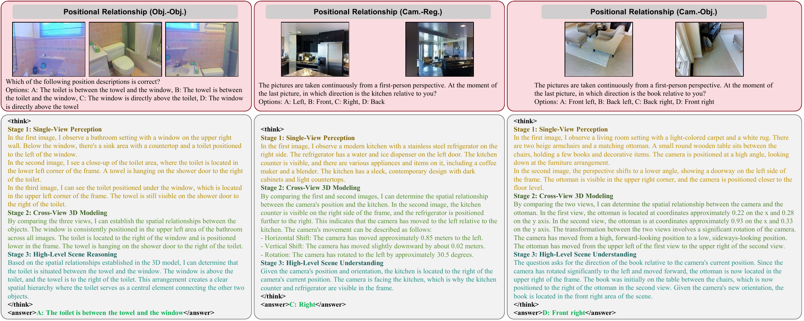

Hierarchical Capability Modeling
Spatial tasks are organized into three progressive levels, covering single-view perception, cross-view scene understanding, and high-level contextual reasoning.
A cognition-driven dataset and training framework that organizes spatial abilities from single-view perception to multi-view contextual reasoning.
1 MoE Key Laboratory of Brain-inspired Intelligent Perception and Cognition, University of Science and Technology of China, China
2 Huawei Noah's Ark Lab
3 Hefei University of Technology, China
* Corresponding authors

MV-STRIDE organizes multi-view spatial reasoning into three capability levels with explicit cross-level dependencies.
Current MLLMs perform well on many single-image spatial tasks, yet still struggle to integrate evidence across viewpoints and maintain a consistent 3D understanding. MV-STRIDE addresses this bottleneck from the data side by replacing flat task collections with a hierarchical, capability-dependent organization of multi-view spatial reasoning supervision.
Spatial tasks are organized into three progressive levels, covering single-view perception, cross-view scene understanding, and high-level contextual reasoning.
Cross-level task dependencies connect prerequisite perception and scene-understanding skills to complex multi-view reasoning problems.
MV-STRIDE follows a perception–modeling–reasoning hierarchy and explicitly links tasks across levels to form spatial cognition process question groups.
Build reliable egocentric spatial awareness through object location, depth, size, camera pitch, and other view-level geometric attributes.
Bridge isolated views through object correspondence, camera motion, viewpoint transformation, and 3D object localization.
Perform high-level reasoning over multiple reference frames, including counting, orientation, virtual perspective, and positional relations.
The pipeline transforms synthetic and reconstructed 3D scenes into geometrically grounded, hierarchical multi-view QA data and long-chain reasoning supervision.

Extract camera and object annotations from Infinigen and ScanNet++, then generate QA pairs with verifiable geometric answers.
Filter questions so that the required evidence is distributed across views, reducing shortcuts that can be solved from one image.
Compose prerequisite Level I and Level II sub-questions into structured reasoning supervision for Level III tasks.
Sampled checks report an overall pass rate of 88.0% for QA pairs and 97.5% for CoT annotations, indicating reliable large-scale generation with limited noise.
MV-STRIDE supports both direct-answer spatial capability learning and structured long-chain reasoning.
Data: Level I–III QA pairs with direct-answer supervision.
Goal: Establish spatial perception, cross-view understanding, and multi-view reasoning foundations.
Data: CoT annotations synthesized from cross-level spatial cognition question groups.
Goal: Teach structured reasoning patterns and long-chain output formats.
Data: Difficulty-filtered multi-view reasoning problems for GRPO.
Goal: Explore and refine diverse reasoning paths while balancing accuracy and interpretability.
Training with MV-STRIDE consistently improves spatial reasoning across single-view, multi-view, and 3D-aware benchmarks. The full-data SFT setting provides a strong accuracy-oriented baseline, while progressive training targets structured reasoning behavior.
| Model | MMSI-Bench | CV-Bench | ViewSpatial-Bench | 3DSRBench |
|---|---|---|---|---|
| Qwen3-VL-8B (Base) | 29.20 | 84.31 | 40.51 | 59.98 |
| MV-STRIDE-SFT (Full-data SFT) | 38.90 | 86.73 | 48.35 | 64.51 |
| MV-STRIDE-SFT (Stage 1) | 37.20 | 86.39 | 50.28 | 65.52 |
| MV-STRIDE-ColdStart (Stage 2) | 36.70 | 85.94 | 47.30 | 61.08 |
| MV-STRIDE-RL (Stage 3) | 37.50 | 85.94 | 49.30 | 59.43 |
Full-data SFT pools the available data for direct-answer SFT. Stage 1–3 follow the progressive QA → CoT → RL route and optimize a different objective, so benchmark accuracy is not expected to improve monotonically across stages.
Full-data SFT improves MMSI-Bench by 9.7 points over the base model and remains competitive across all four benchmarks.
Additional experiments show consistent improvements across Qwen3-VL models of different scales and the MiMo-VL architecture.
Cold-start and RL training encourage the model to produce structured reasoning that progresses from view-level perception to cross-view modeling and high-level spatial inference.

@inproceedings{xu2026mvstride,
title = {MV-STRIDE: Enabling MLLMs to Master Multi-View Spatial Reasoning via Hierarchical Capability Modeling},
author = {Xu, Jin and Huang, Xiaojian and Luo, Zhuodong and Zhang, Zhihong and Liu, Xin and Wei, Jiansheng and Wang, Xinzhi and Zhao, Jie and Chen, Xuejin},
booktitle = {European Conference on Computer Vision},
year = {2026}
}